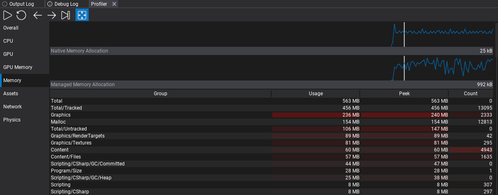

Profiler
The Profiler window provides various ways of measuring game performance and helps the optimization process. It can be used to collect data about game performance right in the Editor.
Interface

Profiler window is divided into 3 parts:
- Toolbar
- Sections list
- Details panel
Sections
Overall
The general profiling mode with major game performance charts and stats.
CPU
The CPU performance profiling mode.
To add code section to be included in profile blocks use the following code:
GPU
The GPU performance profiling mode.
To add code section to be included in profile blocks use the following code:
Profiler.BeginEventGPU("MyFunction");
// do something on GPU with GPUContext
Profiler.EndEventGPU();
Memory

The memory profiling mode focused on breaking down system memory allocations. This includes separate stats for native memory allocation and managed C# allocations. Below the charts there is a table with memory usage broken down into certain engine categories such as: physics, graphics, level, audio, scripting, etc.
Table contains 4 collumns:
- name of the group,
- memory usage,
- peek of memory usage (since the start of the program),
- amount of active memory allocations.
By default, detailed memory allocations profiling is disabled (due to performance overhead). To use memory profiling run Editor or Game with -mem command line. It's supported in Development and Debug builds.
To add a code section to redirect specific memory allocation within into a group ,use:
ProfilerMemory.BeginGroup(ProfilerMemory.Groups.CustomGame0);
// do some native memory allocations
var testObject = new PointLight();
ProfilerMemory.EndGroup();
// Renaming custom group to show custom name in a profiler:
ProfilerMemory.RenameGroup(ProfilerMemory.Groups.CustomGame0, "MyGameLogic");
Debug Command ProfilerMemory.Dump prints memory allocations stats (grouped) to the log. It shows top 20 categories (sorted by size). Argument all shows every used category (ProfilerMemory.Dump all), argument file saves the dump of all categories into a separate file (ProfilerMemory.Dump file, usefull for capturing snapshots for A/B diff).

Tracy profiler has integration with the main memory categories such as Graphics, Physics, UI which comes handly when profiling game remotely (eg. on Android or Switch platforms) to have an overview of memory usage.

Network
The network data transfer sends/receives charts over game time. When using high-level networking it displays RPC methods and replication packets sent from the Editor to other peers.